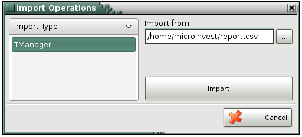

Import Operations
The window Import Operations is used for fast and easy way to import file, which contains diffrent types of operations.

In the field Import from you must show from which folder you will import file.
�2006-2015 Microinvest, All rights reserved